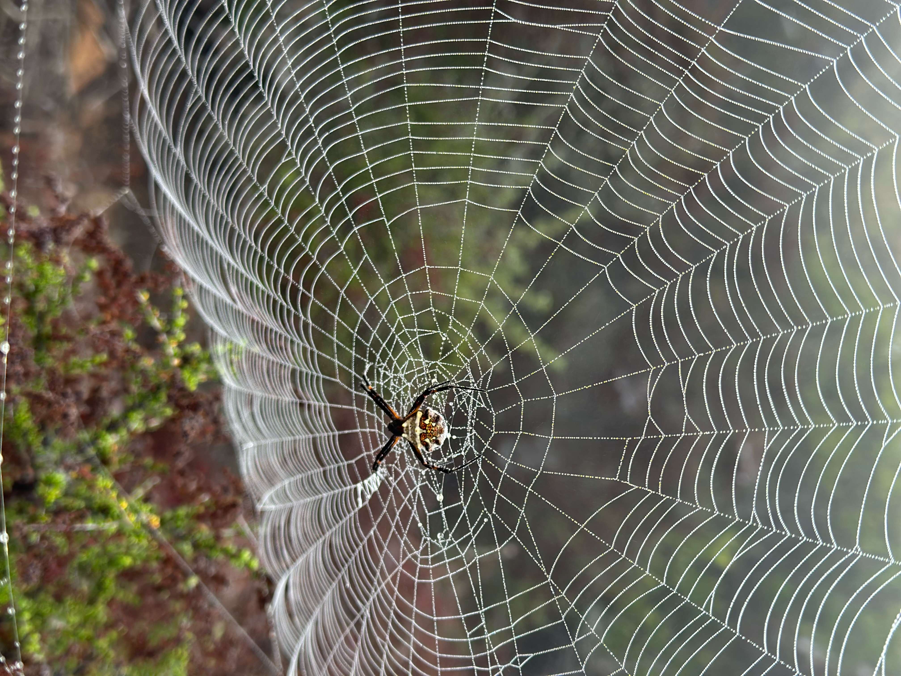
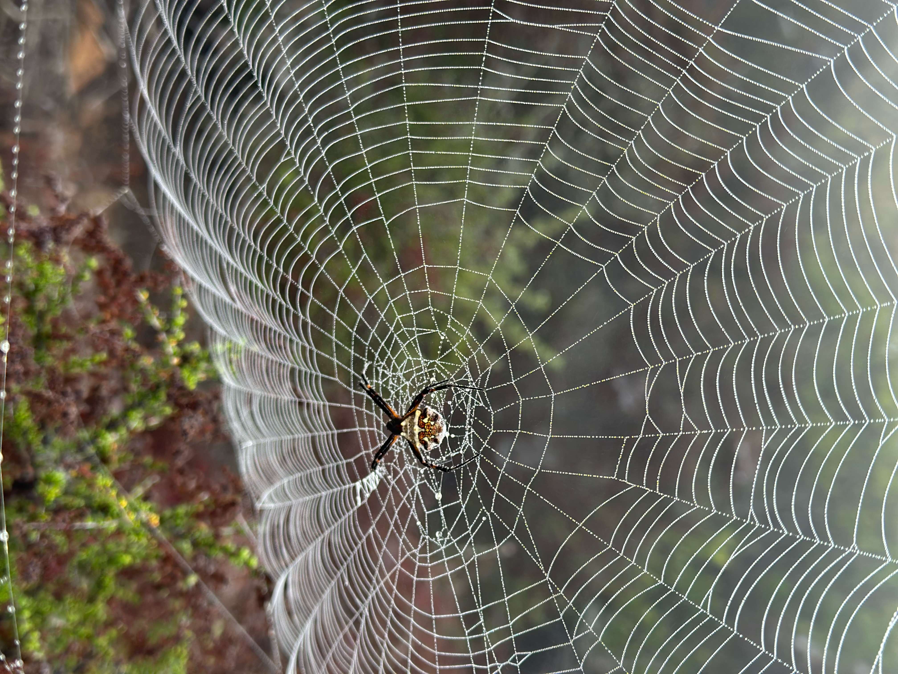

I'm Fred Schlichtholz, a dynamic and driven athlete turned professional, balancing a successful career in baseball with a interest in sales and technology. Standing tall at 6'3" and weighing 250lbs, my athletic prowess is matched by my dedication to continuous improvement. With a keen focus on enhancing my speed and strength as a baseball pitcher, I'm always striving to reach new heights in my sports career.
I am a proud graduate of Coronado High School (2009-2013) and went on to attend California State University of Fresno on an athletic scholarship, maintaining a solid 3.0 GPA. My commitment and talent led me to be a 2017 MLB draftee, and I have been a Minor League Player for the San Diego Padres since then.
My professional journey extends beyond the baseball field. I've gained valuable experience as a Low Voltage Tech at GotUWired and have demonstrated my versatility by working as a Private Contractor in Construction during my college summers. My passion for baseball also saw me take on the role of Private Instructor, where I mentored young athletes.
An active volunteer, I've contributed to various organizations, including Walk For Alzheimer's, Team Smile, Saturday Sports, O2 Breathe Walk, Big Heroes Little Heroes, and Feed The Need Food Collection/Distribution. My commitment to giving back to the community is as strong as my commitment to my personal and professional growth.
Now venturing into the tech world, I'm eager to leverage my diverse skills and experiences to excel as a web developer. With a solid foundation in teamwork, leadership, and discipline from my sports career, I'm ready to tackle new challenges and begin my journey in the tech industry.
I currently reside in San Diego, CA, and when I'm not on the field or working on my career, I enjoy spending time with my dogs, daily walks, days at the beach, and spending time with friends and family. I'm also delving into the world of coding, particularly front-end web design, to expand my technical skills.

 
